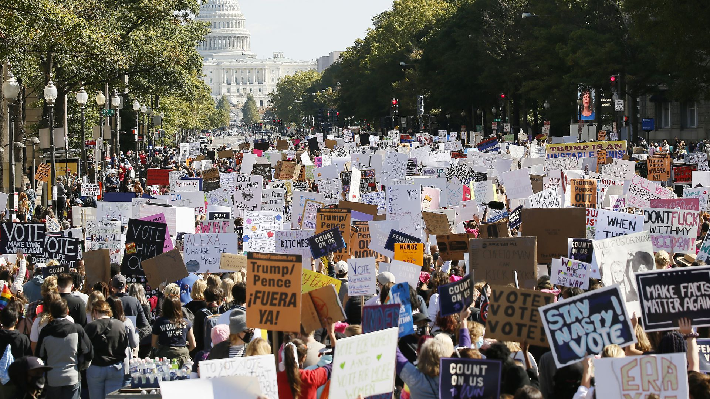
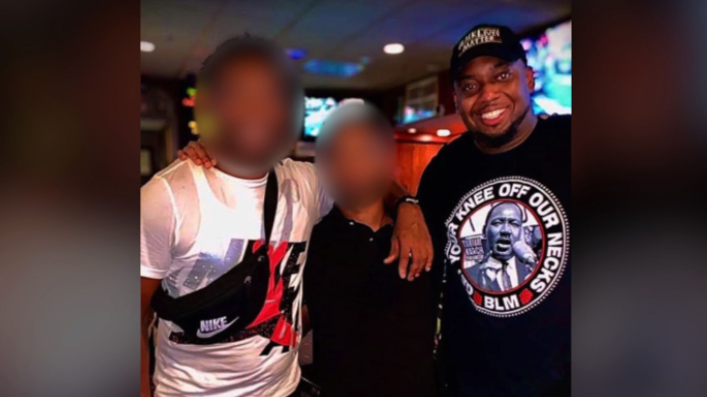

Photo of Chauvin juror wearing 'BLM' shirt raises questions about potential appeal
Photo of Chauvin juror wearing 'BLM' shirt raises questions about potential appeal
A photo of one of the jurors who convicted former Minneapolis police officer Derek Chauvin has raised questions about his impartiality during the trial, and about whether the verdict could be overturned in an appeal.
Why it matters: 31-year-old juror Brandon Mitchell said he answered 'no' to questions in a juror questionnaire about whether he attended demonstrations or marches in Minneapolis after Floyd's death, and about protests against police brutality.
A photo that surfaced on social media shows Mitchell attending the anniversary of the March on Washington last summer, while wearing a T-shirt depicting Martin Luther King Jr. with the words, 'Get your knee off our necks' and 'BLM.'He is also wearing a hat that says 'Black Lives Matter.' Defense attorney Mike Padden told the Minneapolis-based Star Tribune it is 'disconcerting' that Mitchell did not divulge his participation in the march, adding that he may have been removed from the jury pool had he done so. What he's saying: 'I think I was being extremely honest, for sure,' Mitchell told the Minneapolis-based Star Tribune about attending the event, which he characterized as a voter registration rally.'I gave my views on everything — on the case, on Black Lives Matter.'
'I'd never been to [Washington] D.C.,' Mitchell added.'The opportunity to go to D.C., the opportunity to be around thousands and thousands of Black people; I just thought it was a good opportunity to be a part of something.' Mitchell said the picture was posted by his uncle, and that he doesn't remember wearing or owning the shirt.He said the event was '100 percent not' a march for Floyd.Posted On: 2021-05-04T00:00:00
Posted By: Fadel Allassan


Content Date: 2021-05-04
Download Date: 2021-05-15
Document ID: L0C04CCI7